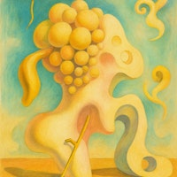
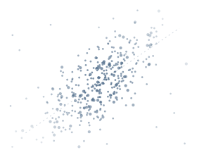

Software / Research
PaperDial
Research Radio for papers.
Every paper has a story. Tune in.
uwakuchi
I make software and music.
Small experiments in software, research, and sound.
01 / Selected project
Software / Research
Research Radio for papers.
Every paper has a story. Tune in.
02 / Other practices

Music and audio projects.
